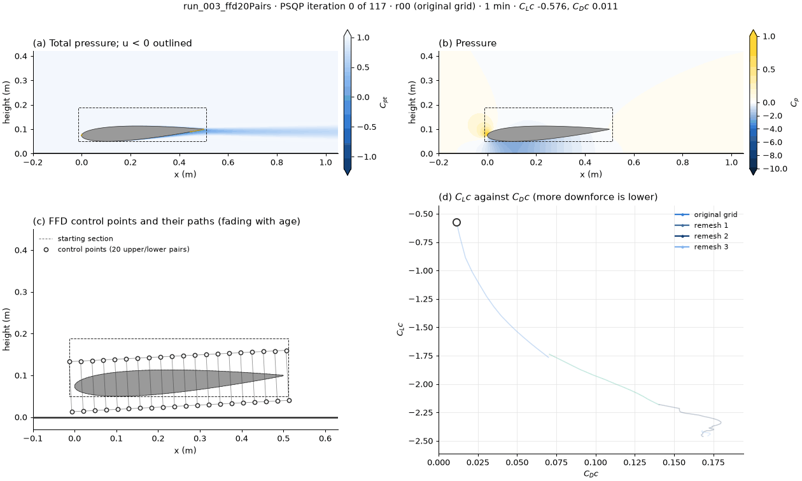
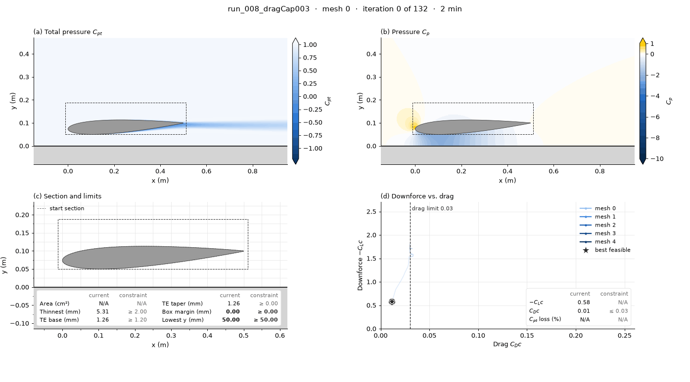
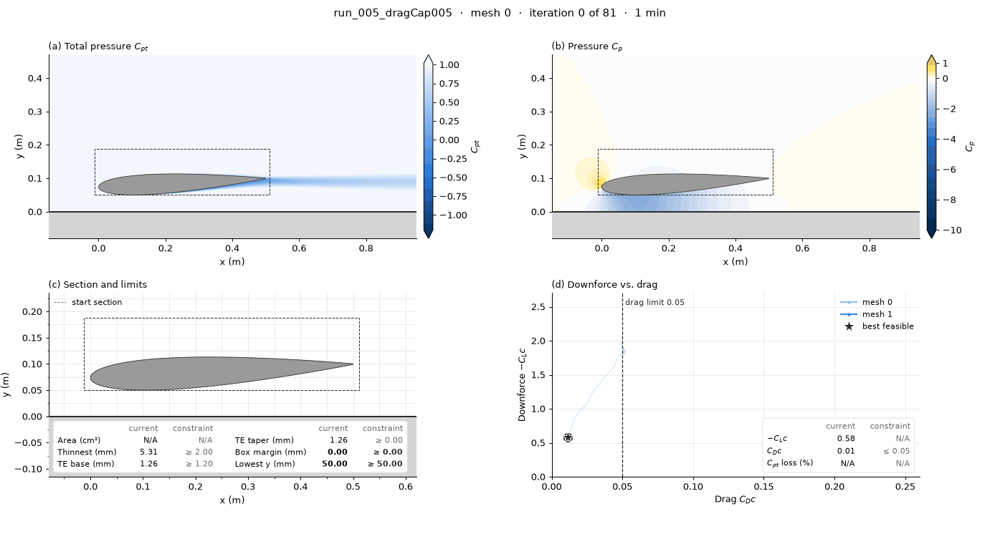
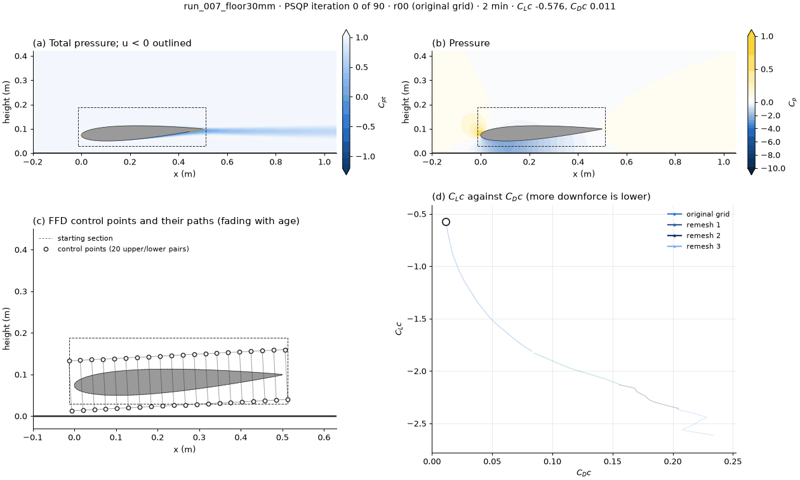
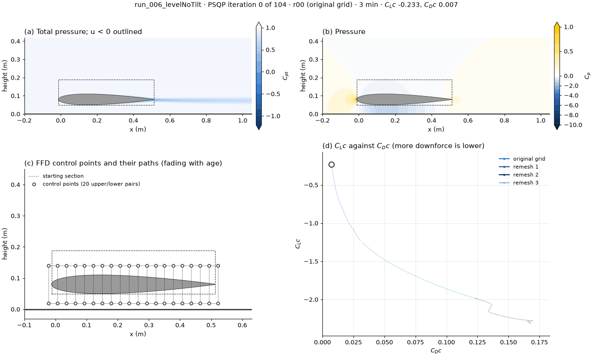
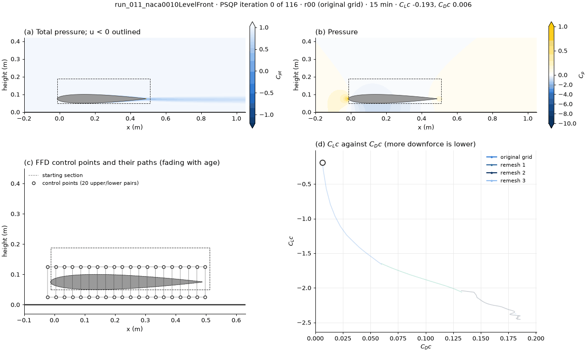

Learnings · 15 Nov 2026
Runs on the reduced box, based on run_003. CLc < 0 = downforce. Tilt = chord angle, nose down. Grid change moves CLc 2–4 %, so smaller gaps are noise.
Base: run_003 · NACA 0012 at 3°, 20 FFD pairs moving x + y, tilt free · box x −12…512 mm, y 50…188 mm (floor 50 mm) · no drag cap
→ CLc −2.462, CDc 0.168, tilt 13.4°, best at 143 min (48 ranks, 4 grids)
→ CLc −2.462, CDc 0.168, tilt 13.4°, best at 143 min (48 ranks, 4 grids)
1Drag sweep
| run | CDc cap | CLc | CDc | vs base | −CL/CD | tilt |
|---|---|---|---|---|---|---|
| run_008 | 0.03 | −1.804 | 0.030 | −27 % | 60 | 7.4° |
| run_005 | 0.05 | −1.982 | 0.050 | −19 % | 40 | 8.7° |
| run_009 | 0.08 | −2.194 | 0.080 | −11 % | 27 | 11.7° |
| run_003 | none | −2.462 | 0.168 | base | 15 | 13.4° |
- The cap is always active: every best design sits on it.
- Diminishing returns. Downforce gained per +0.01 CDc: 0.089 (0.03→0.05), 0.071 (0.05→0.08), 0.030 (0.08→none).
- Lower cap → flatter wing, less tilt.
- run_008 best sits on its limits only to solver tolerance; strictly feasible best is −1.713.
2Ground clearance (box floor)
| run | floor | CLc | CDc | −CL/CD | tilt |
|---|---|---|---|---|---|
| run_003 | 50 mm | −2.462 | 0.168 | 15 | 13.4° |
| run_007 | 30 mm | −2.616 (+6 %) | 0.234 (+39 %) | 11 | 15.7° |
- 20 mm lower → +6 % downforce for +39 % drag. Mostly costs drag.
- Grid limit: the 30 mm near-grid fallback against orphan cells needs a floor of about 35 mm or more. Lower floors need the refined background (+27 % cells).
- Chain stopped early: its 5th grid was wrongly rejected by the old orphan rule (since fixed). It can be resumed from that grid.
3Vertical-only control points
| run | start | moves | CLc | CDc | tilt |
|---|---|---|---|---|---|
| run_003 | NACA 0012 at 3° | x + y, tilt free | −2.462 | 0.168 | 13.4° |
| run_006 | level, stretched to the box x-ends | y only, tilt locked | −2.309 (−6 %) | 0.168 | 12.4° |
| run_004 | tilted, stretched to the box x-ends | y only, tilt free | −1.804 | 0.079 | — |
- Moving control points only vertically gets within 6 % of x + y, at the same drag.
- Tilt comes back anyway: the y moves bend the chord to 12.4°, so tilt doesn't need its own variable.
- The leading and trailing edges stay on the box x-edges, since they can't move in x.
- A level start doesn't converge from the NACA 0012 flow, so its first solve restarts from a converged flow.
- run_004 hit orphan cells on its 1st regrid and was stopped at −1.804. It is not a fair comparison.
Also: start shape
- run_011 (NACA 0010 at 0°) → −2.456 / 0.186: the same optimum as run_003, so the start shape doesn't matter.
- run_010 (NACA 0010 with its trailing edge at the box end) never converged its first solve. run_011 is the same start, shifted forward.
Figures: campaign.png (progress, polar, sections) · orphans.png (the cells that broke runs)


4Iterate GIFs: completed runs
Panels: Cpt · Cp (maize +1, white 0, blue −10) · control points with fading history · CLc vs CDc. Click for full size.













Values are CLc / CDc · grids used · chain wall time @ MPI ranks.
5Solver & optimizer tweaks
"Was" = teammates' driver (main 9423b9e) or tool default.
| item | was | now | why |
|---|---|---|---|
| ADflow (flow + adjoint) | |||
| coupled ANK | ANKCoupledSwitchTol 1e-2 | 1e-16 (off) | Big steps stalled the solver ("ank_deep" setting from the solver study) |
| NK settings | switch 1e-4, subspace 500, ILU fill 5 | 1e-6, 400, 4, ASM overlap 3 | Same study: cured NK stalls |
| nCycles | 4000 | 10000 | Room for slow solves |
| stalled solve | reset to the last converged state | + retried in halved steps from that design (down to 2−4) | Big PSQP steps otherwise fail |
| level starts | start from the NACA 0012 flow | --restart-flow (a converged flow) | The first solve diverged |
| IDWarp errTol | 5e-4 | 1e-5 | Its coarse far-field approximation could invert large cells |
| PSQP (pyOptSparse) | |||
| step limit XMAX | 0.05 | 1.0 | 0.05 crawls; 1.0 works once the solver can take big steps |
| MIT / MFV | 50 / 150 | 500 / 2000 | The watcher decides when to stop, not PSQP |
| tilt lock | pyGeo freezeVars | equal real bounds | freezeVars passed complex bounds, which crashed PSQP |
| drag cap input | input is cd; CDc = 0.5·cd (--drag-cap 0.1 → 0.05; 10 = off) | Easy to get wrong | |
| Chain (run_chain.py, ours) | |||
| regrid | one grid | new pyHyp near grid at the last iterate when PSQP stalls (gain < 0.005 in 15 min, after its 1st step) | The warped mesh degrades as the shape moves |
| chain end | — | stops when a run gains < 0.005, or a new grid doesn't beat the earlier best by 0.005 | The 2–4 % regrid shift otherwise loops forever |
| orphan check | — | reads the final overset pass; on orphans retries other pyHyp settings, then the 30 mm near grid (vs 25 mm), then an earlier iterate | Orphan cells broke the adjoint 5 times |
| guards | — | 10-min pyHyp timeout; FFD lattice re-embedding check (> 1e-9 m → stop) | One 48-min hang; run_002 lost its lattice |
| Machine & problem | |||
| CPU | 64 ranks (earlier runs) | 48 ranks (6 per NUMA node) or 2 × 24, on cores 12–63 only | Cores 0–11 are reserved; contention made runs 6–10× slower |
| box | x −125…625, y 50…350 mm | x −12…512, y 50…188 mm | Shorter runs (run_002: 110 min) |
| thickness | max thickness only | + local ≥ 2 mm, TE ≥ 1.2 mm with 8° taper | Stops pinched sections |
6Computation cost
Grid: 88.5 k cells, RANS SA. CPU: AMD EPYC 7601. Medians over all campaign evaluations.
Flow solve (warm start)
12 s · 17 s
48 · 24 ranks; big steps or a new grid 30–70 s
Adjoint (CL + CD gradients)
28 s · 41 s
48 · 24 ranks
One PSQP iterate
≈ 40 s · 60 s
solve + adjoint, 48 · 24 ranks
One optimization (chain)
2.5–3.2 h · 3.6–5.2 h
48 · 24 ranks; 2–5 grids, 80–135 iterates
| campaign (runs 003–011) | |
|---|---|
| chains | 9 (7 done, run_004 stopped, run_010 failed) |
| run segments (grids + retries) | 40 |
| function evaluations / flow solves / adjoints | 1,357 / ≈2,200 / 861 |
| summed run time | 27 h |
| compute | ≈ 900 core-h |
| wall clock (2 lanes in parallel) | 16.6 h · Nov 14 15:52 → Nov 15 12:28 |